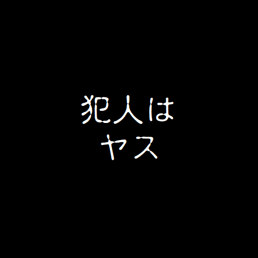
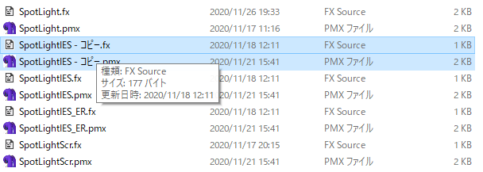
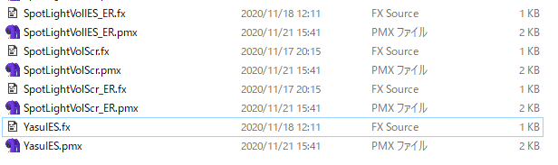
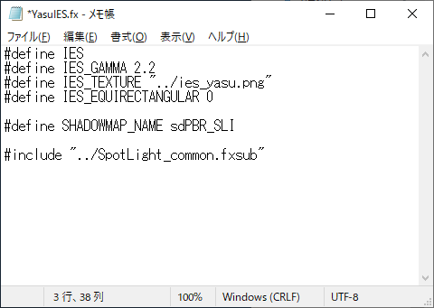
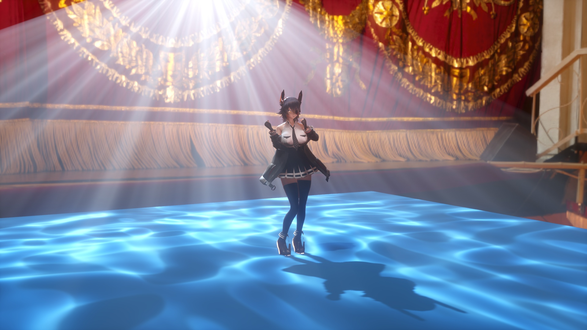
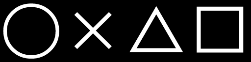

MMDの照明操作パネルで操作できる平行光源と、skyboxによってもたらされる環境光のほか、sdPBRではlighting\SpotLightなどのフォルダ下にあるpmxファイルをドロップすることで、後から追加のライトを配置できます。追加のライトの種類も増えてきたので総じて追加ライトと呼ぶことにします。追加ライトはどれも直接光をモデルに対して投げかける働きをします。
Version2.00から、ライトの機能ごとにpmxファイルが分かれました。各機能に対応したpmxファイルをドロップしましょう。今までと異なり、同名のpmxファイルを幾つでも配置でき、sdPBRconfgでライト0～3を個々に設定する必要もなくなりました。
以下、追加ライト共通仕様を挙げます。細々したことも羅列しているので使ってみて「何かおかしいな？」とか「こういう表現がしたいんだけど、どうやるんだろ？」となった時にでも読んでください
半透明体が2つ以上連続して重なっている箇所では一番手前に置いてある半透明体と奥にある不透明体のみを考慮したライティングになります。
平行光源でも同様ですが影はα値以上か未満かで生成されるかされないかが決まります。閾値はshader\sdPBRconfig.fxsub内のLIGHTALPHA_THRESHOLDで変更できます。必要に応じていじりましょう
追加ライトへ情報を渡す際にほとんどのマテリアルのパラメータは0～1の範囲に丸められるので、追加ライト下と平行光源下で見た目がまるで違う場合はマテリアルのパラメータが極端な値になっていないかチェックしてみてください
とりあえずbaseColor,sssColorはそのまま渡ります。詳しくはsdPBRGBuffer.fxの先頭付近に書いてあります
基本的に追加ライトはZ-方向(青い矢印の方向)に光を出しますが、エフェクト－狙いボーンがあります、これがセンターボーンから0.01MMD距離以上離れている状態の時、センターボーンから狙いボーンの方向へ向かって光が出る事になります。外部親などに登録して任意のモデルを追いかけるように照明を行う事ができます
Ver.1.90までは磯っぺさんのご協力で作成したIK版を別に用意していましたが、シェーダで実現できるようになったためIK版と統合された形になります。ボーン構造が違うため以前のバージョンのPMMから引っ越す際には注意が必要です
sdPBRのデフォルトの設定ではセルフ影の設定やモデルの編集状態などに関わらず、常にシャドウマップによる影を作りますが、shader\sdPBRconfig.fxsub内でALWAYS_CAST_SHADOWシンボルが宣言されていない場合はMMD標準のセルフ影適用ポリシーに従っていました。しかし、Version2.00から追加ライトについてはALWAYS_CAST_SHADOWが宣言されていない場合でもシャドウマップによる影の計算は常時行います。(ライトライトとコーン角度が0.5未満になっているスポットライト、四角いライトを除く)
追加ライトは以下のように分類できます
スポットライト・オムライト・ライトライトは点光源としても使えます。表情操作パネルで明るさモーフだけ上げると点光源として360°を照明します。影の作り方が以下のように異なります。
四角いライトは明るさの他に幅・高さモーフを指定して光源自体のサイズを指定する必要があります。明るさ・幅・高さの3つのモーフがどれか1つでも0の場合は照明効果が無いのでご注意ください
各追加ライトはさらに細分され、属性名がpmxファイル名の後ろにつけられています
IES or Scrの場合テクスチャの貼り付け方によってさらに以下の属性が有ります
それぞれの属性は組み合わせることができるので、なるべく有効な組み合わせの数だけpmxファイルをご用意しました…と言いたいところなんですが、本当に組み合わせの数だけとなると網羅しきれなくなってきたので、無いものは必要に応じて組み合わせてみてください。ライトのカスタマイズの方法は後述します。
ライトライトは影を作らないためボリュームライトにしても物体に遮られて光の筋を出す効果が表れません
ランプにしてもロウソクにしても現実の照明という物は全周を一定の明るさで照らすようなものではないですよね？ロウソクだったら火のついている部分を中心すると、ロウの立っている地面の方向は、火のついている上方向に比べて暗いはずです。ランタンならば上下の覆いのある部分への照明は暗くなるでしょう。配光特性というのはライトの向いている方向に対する角度による明るさの違いを記述したデータの事です。
つまりこういう事です。SpotLight\SpotLightVolIES.pmxを使いました。
モデルは(｀・ω・)様作 大淀改を、背景はにくきゅー様作 木の教会をお借りしました。ありがとうございます。配布先はリンクからどうぞ！
懐中電灯の照射口にセロファンを貼って照らせるようにしている、とでもご理解いただければいいんじゃないかと思います。「犯人はヤス」を記述するための配光特性を格納したファイルがlighting\ies_yasu.pngです。このドキュメントでは配光特性テクスチャと呼びます。中はこんな感じです

白い所が明るくなり、黒い所は暗く照明されます。何気にカラー画像も指定できます。そして、画像のど真ん中がスポットライトの向いている方向(0°)、画像の外側に行くほどスポットライトの向いている方向からズレていきます。画像の端が180°つまり真後ろです。ちなみにコーン角度を絞るとそれに合わせて配光特性テクスチャの内容も絞られていきます。基本的に配光特性テクスチャに直線で描かれている物は直線で表示される(曲がった物体に投影した場合は当然歪みます)ので扱いやすいですが、90°を超えると折れ線になります。
真後ろに当たる部分は配光特性テクスチャ上では四角い縁なのに、表示上は一点なので、どうしてもシワが出ますから、配光特性テクスチャの外側付近は黒で塗りつぶした方が良いでしょう。
UE4やray-mmdを触ったことのある方はなんとなくIESプロファイルって聞いたことがあるかもしれませんが、IESプロファイルとは光源の配光特性についてのデータであり、Illuminating Engineering Society (IES)によってフォーマットが定められて公開されています。sdPBRでの奇妙な実装は、IESと付いてはいますがIESプロファイルそのものとはもはやあんまり関係ない気がします。
デフォルトでは配光特性テクスチャはlighting\ies.pngという名前のファイルに格納する事になっていますが、先の例のように他の柄に替えたい時もあるでしょう。一番簡単な方法としては、ies.pngを他の画像で上書きしてしまう事ですが、ライトAとライトBで違う配光特性テクスチャを使いたい、という状況もあるでしょうから、スポットライトの配光特性テクスチャの変更法について説明します。
まず、使いたい属性に対応するpmxファイル及びそれと同名のfxファイルをコピーします。

そしたら、適当に同じ名前で.pmxファイルと.fxのファイル名部分だけ変更します。この例ではYasuIES.pmxとYasuIES.fxとしました。

YasuIES.fxをメモ帳で開いて、#define IES_TEXTURE "../ies.png" と書いてある所の、ファイル名を好きなファイル名に変更します。パスはYasuIES.fxの置いてあるディレクトリからの相対パスで指定するので、lightingディレクトリは自分より一つ上のディレクトリを示す"../"になります。
今回は、これをsdPBRになぜか同梱されている「犯人はヤス」テクスチャにしましょう。"../ies.png"を"../ies_yasu.png"に変更します

YasuIES.fxを上書き保存すれば配光特性テクスチャを変更したスポットライトの完成です。テストしてみましょう！
うまくできましたか？
やっつけではありますが軸対称なIESプロファイルの書かれたデータ(照明器具メーカなどで公開されているIESファイルの中身はテキストデータです。読み方は各自で調べてね！)を元にテクスチャを作るためのツールもあります。tool\sdIESDraw.fxというのがそれです。なんとfxファイル。.fxファイル内をいじるとsdIESDraw.xをドロップしたMMDの画面に配光特性テクスチャデータが描かれるので、出力サイズを512x512ピクセルなど正方形に指定して、画像ファイルへの出力を使って.jpgファイルへ書き出してください
照明器具メーカの中にはこうしたIESプロファイルを公開・ダウンロードできるようにしているメーカーもありますので、現実の照明に配光特性を寄せたい時には利用するといいかもしれません(但し、IESDrawで扱えるのは軸対称なデータに限られる点に注意してくださいね)
なんでMMEとして実装されているのかと言うとIESプロファイルのパーサを作るのが面倒だったからです
Version2.00から全方位に影を落とせる全方位シャドウマップ(Omnidirectional Shadowmap)対応スポットライト、略してオムライトが追加されました！
普通のスポットライトとの違いは影の落ちる方向だけで使い方自体にはあまり違いが無いのですが
という違いが有ります。シャドウマップを6枚作って立方体の各面に配置するような格好になるのでシャドウマップのための処理が6倍なんですね。
特にメモリの消費量も単純に6倍というのはわりと洒落にならないので、デフォルトではシャドウマップの解像度が他の追加ライト用シャドウマップの半分に設定され、シャドウマップ自体のメモリ消費量は最大で約1.5倍になります(sdPBRconfig.exeで変更できます)
ですので、なるべく影のディテールが気にならないよう、ライトの照射範囲を俯瞰するような構図で使った方が無難だと思います。
Version1.70までは大きさの無い、点から発射される光源しか扱ってませんでしたが、Version1.80から大きさのある光源が追加されました！とはいっても後でお話しするように制約があります、それでも何かの表現には役立つと思うので組み込んでみました
名称についてはもうちょっとなんとかならんのかと呆れるかもしれませんが、四角いライトが正式名称です。LinearlyTransformedCosinesBasedRectangularLightとか色々考えたのですがシンプルに四角いライトにしました。
使い方自体は今までの光源同様、MMDからはRectLight.pmxをドロップするだけです。
ライトを点けるためには今までのスポットライトの明るさモーフだけでなく、四角いライト専用モーフである右下の幅・高さモーフもそれぞれ上げる必要があります。幅・高さのどちらかが0では光源自体の面積が0になるので明るさもなくなります
表情パネル左上の光源マーカーモーフの数値を上げると、ライトのおいてある位置が画面に表示されます。ライトの照射面の裏側は不透明度が低く透けて表示されますので、裏表の判別に便利です。これはあくまで位置を表示するための便宜的な物ですので絵作りの要素の一つとして使う事はあまり考えられていないという点をご留意ください。
四角いライトは光源自体に面積が有るのでテレビや劇場のスクリーンから光が広がっていく様子が自然に表現できます。スポットライトとIESプロファイルを利用した光がプロジェクターやレーザーを利用した光のように一点から、シャキッと拡がってくのに対して、四角いライトでは面からぼんやりと拡がっていくのが特徴です。
背景モデルにムムム様 作 シンプルルームを使用させていただきました、ありがとうございます。
他の追加ライト同様、配光特性テクスチャの指定やボリュームライト化もできますが、Equirectangularを指定できません。面光源は面の前方にしか届かず、360°に拡がらないからです。
輝度の計算方法が特殊なため、一部のマテリアルのパラメータが無視されます。Version3.10時点では、具体的に以下のパラメータが無視されます
cleacoatの計算を行った場合、読み込み時間がかなり伸びる事が確認されたので仕方なく一旦clearcoatは無効としましたので、clearcoat素材に対する映り込みが反映されません。
anisotropicが無視されるためAnisotropicFuzz拡張シェーディングモデルは効果が無くなり、porouscoatが無視されるためcosmetics拡張シェーディングモデルも効果がありません。
以上は四角いライトによるライティングの際のみの話であって、同時にシーンに置かれている他のスポットライト・平行光源・環境光(skybox)によるライティングについてはまた別の話になります。
基本的にはメインの光源としては使わず、使ったとしても映画館など薄暗いシーンでほんのりと照らされるような効果として使うのが良い方法だと思います。
Version1.70よりあった四角いライトは正確な近似が出来る代わりにマテリアルの一部のパラメータを考慮しきれず、読み込みが遅いという欠点があったので、近似は正確でなくてもマテリアルのパラメータを一応全部考慮出来て軽い物を作れないかという事で、Ver2.90より追加された光源群です。具体的には以下の種類があります。
それぞれIESプロファイルには対応していませんが、ボリュームライトには対応しています
QuadLight,DiskLightは幅・高さモーフで光源自体のサイズを変える事が出来ます。TubeLightは高さモーフで長さを変えられます。
どれも照明のされ方としてはあまり正確ではありませんが、点光源よりは拡がり感のある照明が出来るので使い道はあると思います。特に蛍光灯や地面に線状に配置されている光源として使えるTubeLightは使いどころが多いと思います。TubeLightにはシャドウマップが付けられないので影が落ちないのですが、どうしても必要な場合はTubeLight.fxファイルを書き換えると一応付ける事が出来ます。
以前より有った四角いライトにしてもそうなのですが、大きさの有る光源全部に言えている事として、シャドウマップは点光源用の物の使いまわしなので、影の落ち方は点光源の時と全く変わらないという事が挙げられますから、まあそういうもんだと思って上手く使って下さい。
Version 4.30より、配光特性テクスチャをプロシージャルに生成する枠組みが付きました。これによりリアルタイムで多彩な表現が出来るようになりました。lighting/ProceduralIESフォルダの中に入っているライト群がそうです。
Version4.40現在では2種類のライトが収録されていますので、それぞれについて説明します。
水底の集光模様を模したゆらめきのあるライティングを施します

そのほかのスポットライトに以下のモーフが表情パネル右下に追加されています
| 波粗く/細かく | 集光模様の周波数を指定します |
| 波濃く | 集光模様がハッキリしなくて物足りない時は上げてください |
ライトをセルで分割し、スジの目立つボリュームライトなどを都合よく作ることが出来ます。また、セルごとに色相を変化させたり点滅させるなど、多彩な演出が1台のライトで可能になります。セルごとに描画されるビームの内容はテクスチャで指定できます。(デフォルトではgrid_circle.png)。変更方法についてはSpotLightIESP_Grid.fxをお読みください。
そのほかのスポットライトに以下のモーフが表情パネル右下に追加されています
| X列数/Y列数 | ライトのX軸,Y軸方向に何セルx何セルに分割するかを指定します。0.1上げるごとに1セルずつ増えます。1より大きな値を指定しても問題ありません |
| 点灯X/Y± | ライトをX-/X+/Y-/Y+の方向からモーフの値を上げるにつれて1列または1行ずつ点灯します |
| 点灯X/Y0 | ライトをX軸またはY軸の中央から外に向けて点灯します |
| テンポ | ランダム・ウェーブ・コマアニメ・ドキドキ度によるアニメーションのテンポを指定します。1.0の時200bpmに相当します。 |
| ディレイ | 上記テンポだけでは位相がずれる場合の位相合わせに使って下さい |
| ランダム消灯 | セルをランダムに選んで消灯させます。モーフの値を上げるほど消えたセルの生じる確率が上がります |
| X/Yウェーブ消灯 | X/Y方向の波が伝わるように点灯・消灯を繰り返すようになります |
| 彩度上げ | ビームテクスチャに描かれている内容より彩度を変更します |
| ランダム色相 | 色相をランダムに変更します。モーフの値を上げるほど色相の変化幅が大きくなります。元が白黒のテクスチャの場合は効果が分からないので彩度上げモーフをいじってください |
| X/Yウェーブ色相 | X/Y方向に波が伝わるように色相の変化をさせます |
| 回転刻み | ランダム回転モーフによって各セルに描かれている内容をランダムに回転される場合、何回転ずつで固定するかを指定します。例えば0.25を指定すると90度単位での回転に限定されます |
| ランダム回転 | 各セルの描画内容をランダムな角度で回転させます |
| X/Yウェーブ回転 | X/Y方向に波が伝わるようにセルの内容を回転して描画します。このモーフを0より上げる場合は回転刻みモーフを0にセットした方が良いでしょう |
| コマ数 | ビームテクスチャがフリップブックになっていると仮定して、そのコマ数を指定します。モーフの値が0.1上がるごとに1コマのフリップブックと仮定します。フリップブックについては後述します |
| コマアニメ速く | コマアニメの再生速度をモーフの値*10倍速にします。0.1以下の場合は1倍速とみなします。 |
| コマアニメ遅く | コマアニメの再生速度をモーフの値*10分の1倍速にします。0.1以下の場合は1倍速とみなします。 |
| ランダムコマ | 各セルにランダムなコマを表示します |
| X/Yウェーブコマ | X/Y方向に波が伝わるようにコマアニメを再生します |
| ビーム絞り | 各セルの表示を狭くしてビーム同士の間隔を空けます |
| ドキドキ度 | ビーム絞りが自動的に変化してドキドキ感を出します |
Gridではビームテクスチャを横方向に等分して1コマとして各コマごとに表示するコマアニメの機能があり、それに準拠したテクスチャをフリップブックと、ここでは呼びます
例えば、以下のような内容になっているgrid_marubatsu.pngをビームテクスチャに指定し、コマ数モーフに0.4を指定すると、4コマからなるフリップブックとして扱われます

その状態からランダムコマモーフを1.0まで上げると、以下のように各コマがランダムに切り替わります。テンポモーフも上げると時間ごとにコマが自動的に切り替わります。
{kind=link}
{kind=link}
{kind=link}
{kind=link}
{kind=link}
{kind=link}